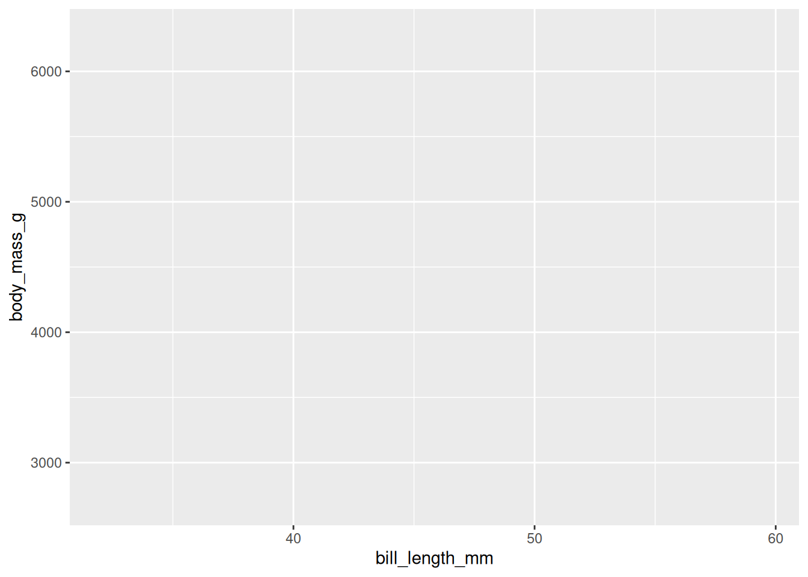
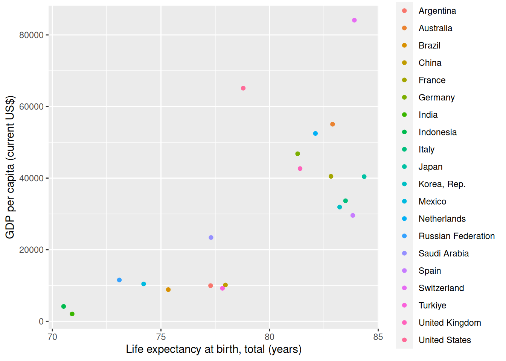
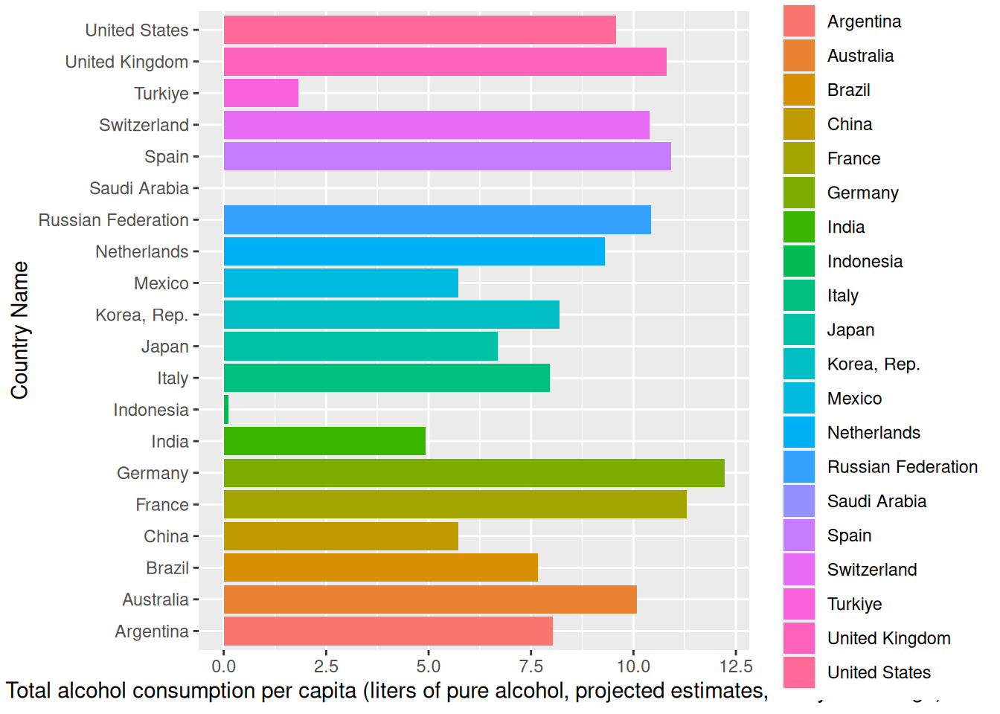
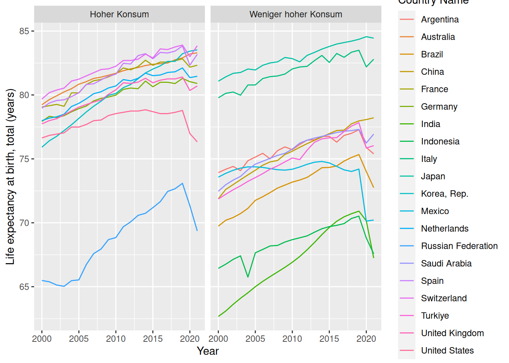
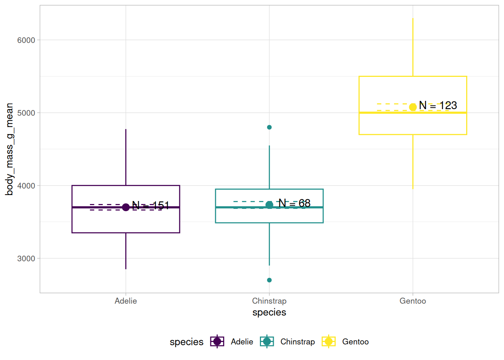
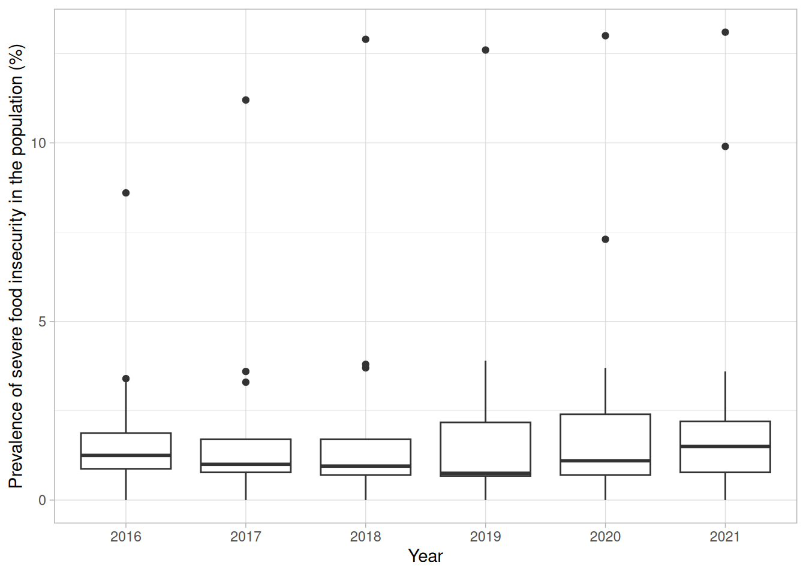
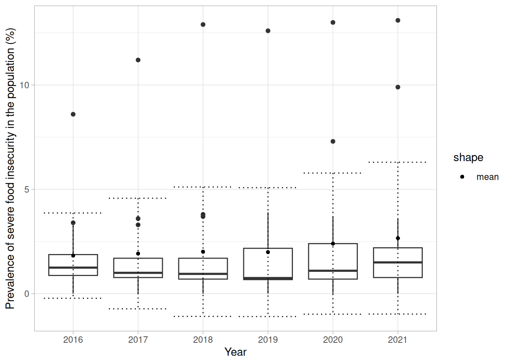
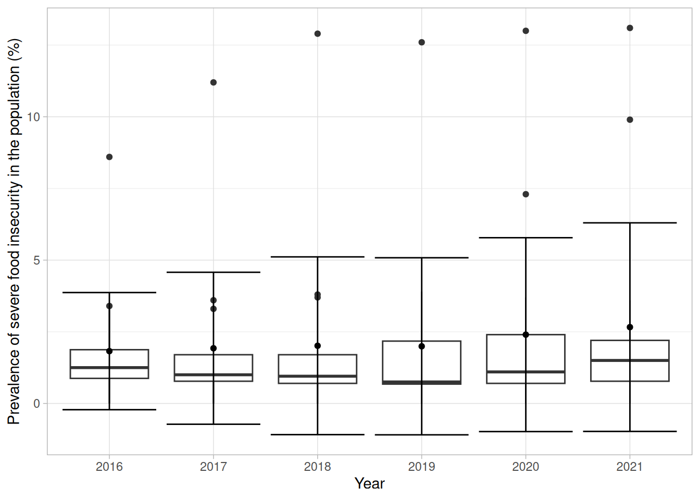
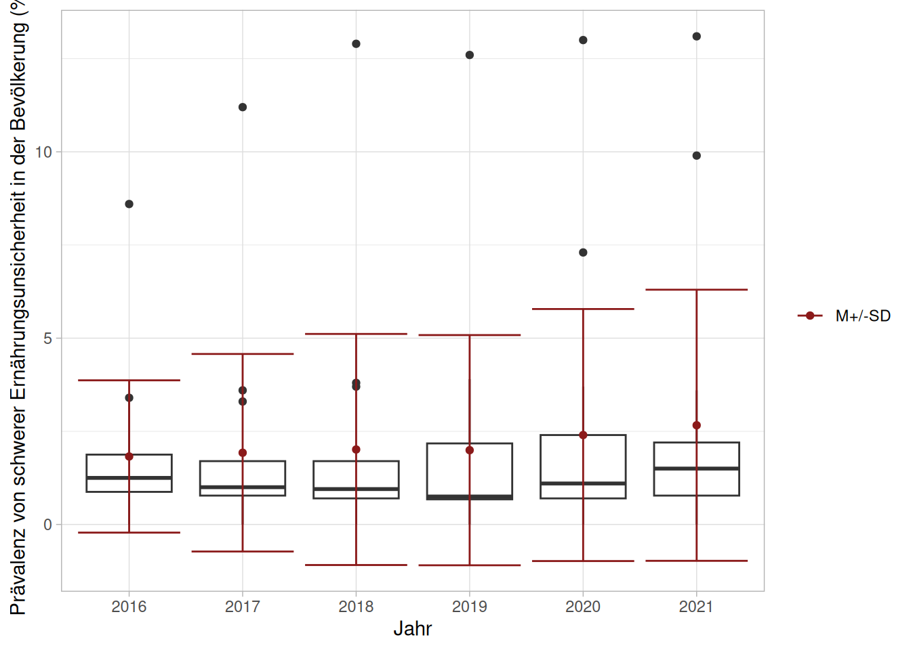

Hadley Wickhams Paket ggplot2(Wickham, 2016) versucht, die Erstellung von Grafiken in einer einheitlichen Grammatik, der “grammar of graphics”, auszudrücken. Das Ziel hier ist es, nicht mehr in “Scatterplot” und “Boxplot” als einzelne Kategorien zu denken und diese einzeln erstellen lernen zu müssen, sondern alle Abbildungen mit derselben Logik erstellen zu können.
In Seinem Paper (Wickham, 2010) werden die folgenden Komponenten als grundlegende Bausteine einer Grafik eingeführt:
a default dataset and set of mappings from variables to aesthetics,
one or more layers, with each layer having one geometric object, one statistical trans- formation, one position adjustment, and optionally, one dataset and set of aesthetic mappings,
# A tibble: 6 × 8
species island bill_length_mm bill_depth_mm flipper_length_mm body_mass_g
<fct> <fct> <dbl> <dbl> <int> <int>
1 Adelie Torgersen 39.1 18.7 181 3750
2 Adelie Torgersen 39.5 17.4 186 3800
3 Adelie Torgersen 40.3 18 195 3250
4 Adelie Torgersen NA NA NA NA
5 Adelie Torgersen 36.7 19.3 193 3450
6 Adelie Torgersen 39.3 20.6 190 3650
# ℹ 2 more variables: sex <fct>, year <int>
1. Daten und Aesthetics - ggplot() + aes()
Wir wollen den Zusammenhang zwischen Körpergewicht und Schnabellänge über die Spezies betrachten. Dafür legen wir die “Leinwand” des Plots mit den zentralen mappings an:
palmerpenguins::penguins %>%ggplot(aes(x = bill_length_mm, y = body_mass_g,color = species))

Dabei können natürlich je nach geom(s), die aufgeschaltet werden, unterschiedliche mappings relevant sein. Welche jeweils nötig sind, lässt sich auf der Hilfeseite des entsprechenden geoms nachlesen.
Beispiele für mögliche Werte für die meisten mappings lassen sich in der ggplot2-Vignette zum Thema (vignette("ggplot2-specs")) finden.
2. Geometrische Objekte - geom_*
Diesem Plot fügen wir Punkte als geometrische Objekte hinzu, die uns zu einem Scatterplot führen:
palmerpenguins::penguins %>%ggplot(aes(x = bill_length_mm, y = body_mass_g,color = species)) +geom_point()
3. Skalen - scale_*
Die Symbole und Farben haben genau wie x- und y- Koordinaten als ästhetische Mappings eigene Skalen. Wenn uns also die Farben nicht passen, können wir einfach eine andere Skala setzen:
Das Koordinatensystem passt von der Auflösung erstmal, aber wir wollen eine direkte Zuordnung von 10 mm Schnabellänge zu 1000 g Körpermasse. Dazu fügen wir eine coord_*-Spezifikation an:
Als letzte Komponente überlegen wir uns, dass die verschiedenen Beobachtungspunkte als Einteilung interessant sein könnten und wir diese getrennt betrachten wollen. Mit der facet-Familie können wir den Graphen nach Indel facettieren:
Neben den dem Point-geom gibt es in ggplot2 natürlich auch so gut wie alle anderen geoms, die für gängige Plots nötig sind. 1
1 Daneben gibt es einen riesigen Stamm an Paketen, die weniger gängige Plot-Typen als geoms implementieren, z.B. ggwordcloud für wordclouds, ggalluvial für Alluvial und Sankey-Diagramme, ggnet für Netzwerk-Plots und das bei meinen Studis sehr beliebte ggpubr für ‘publication ready plots’. Auf cran sind im Moment 213 Pakete gelistet, die mit “gg” anfangen und ggplot2 imoprtieren oder von ggplot2 abhängig sind.
Die folgende Auswahl ist nach dem System des sehr zu empfehlenden Cheat-Sheets von posit zu ggplot2 sortiert und nur ein Bruchteil der in R angelegten geoms.
Für die Darstellung einer numerischen Variable bieten Histogramme und ähnliche Darstellungen der Verteilungen einer Variable an.
In Abbildung 6.1 sind vier Beispiele, wie sich mit ggplot2 eine numerische Variable darstellen ließe. Alle diese Plots haben den folgenden ggplot-Call als Grundlage:
Abb 6.1: Eine Auswahl der in ggplot2 angelegten geoms, die die Verteilung einer Variable abbilden.
Alle vier Beispiele berechnen dabei die bins in die die Beobachtungen einsortiert werden als Standard so, dass 30 Gruppen entstehen.
Welches der auf der geom_histogram()-Hilfeseite genannten Argumente hilft mir am ehesten, die Bin-Breite auf 5mm flipper-Length zu setzen?
binwidth
The width of the bins. Can be specified as a numeric value or as a function that calculates width from unscaled x. Here, “unscaled x” refers to the original x values in the data, before application of any scale transformation. When specifying a function along with a grouping structure, the function will be called once per group. The default is to use the number of bins in bins, covering the range of the data. You should always override this value, exploring multiple widths to find the best to illustrate the stories in your data.
Im Hilfetext wird auch die Möglichkeit eines Funktionsaufrufs genannt. Wenn wir zum Beispiel 5% des Abstands zwischen Maximum und Minimum des Wertebereichs als Binwidth setzen wollen, können wir den folgenden Call mit Lambda-Funktion benutzen. Lambda-Funktionen sind anonyme Funktionen, für die in R 4.1.0 die Kurzschreibweise \(x) <body> statt function(x) <body> eingeführt wurde.
In Abbildung 6.2 wird die Basis des geom_point-Blocks aus dem Anfang des ggplot-Abschnitts für alle vier Plots genutzt. Die Basis ist also in jedem Fall der folgende Code-Schnipsel:
palmerpenguins::penguins %>%ggplot(aes(x = bill_length_mm, y = body_mass_g))
(a) + geom_point()
(b) + geom_quantile()
(c) + geom_smooth(method = ‘lm’)
(d) + geom_rug(sides = ‘bl’)
Abb 6.2: Eine Auswahl der in ggplot2 angelegten geoms, die die Verteilung einer Variable abbilden.
Typische Darstellungen, die diskrete und kontinuierliche Variablen kombinieren, sind Darstellungen von Verteilungsvergleichen. Zum Beispiel könnte der Vergleich der Verteilungen der Schnabel-Länge zwischen den Spezies mit folgendem Call angelegt werden:
palmerpenguins::penguins %>%ggplot(aes(x = species, y = bill_length_mm,color = species))
In Abbildung 6.3 sind drei Möglichkeiten abgetragen, wie sich diese Basis für eine Darstellung nutzen ließe.
Natürlich sind viele der schon genannten geoms auch nutzbar, um drei Variablen darzustellen. Mit unserem Beispiel vom Anfang hatten wir z.B. ja schon drei Variablen (species, bill_length_mm und body_mass_g) auf jeweils eine “Ästhetische Dimension” gemapped.
Für zum Beispiel Korrelationsdarstellungen könnte ergänzend aber noch geom_tile ganz interessant sein. Dazu berechnen wir einmal die Korrelation zwischen allen numerischen Variablen in unserem Datensatz:
palmerpenguins::penguins %>%select(where(is.numeric)) %>%cor(., use ='p')
Mit ein bisschen R-Magie machen wir daraus einen ggplot-kompatiblen Datensatz mit den drei Variablen x-Dimension, y-Dimension und Korrelation:
Code
r <- palmerpenguins::penguins %>%select(where(is.numeric)) %>%cor(., use ='p')r <-tibble(x =rep(row.names(r), nrow(r)),y =rep(colnames(r), each=nrow(r)),r =c(r))r
# A tibble: 25 × 3
x y r
<chr> <chr> <dbl>
1 bill_length_mm bill_length_mm 1
2 bill_depth_mm bill_length_mm -0.235
3 flipper_length_mm bill_length_mm 0.656
4 body_mass_g bill_length_mm 0.595
5 year bill_length_mm 0.0545
6 bill_length_mm bill_depth_mm -0.235
7 bill_depth_mm bill_depth_mm 1
8 flipper_length_mm bill_depth_mm -0.584
9 body_mass_g bill_depth_mm -0.472
10 year bill_depth_mm -0.0604
# ℹ 15 more rows
Diese drei Dimensionen können wir mit geom_tile darstellen:
r %>%ggplot(aes(x, y, fill = r)) +geom_tile()
Alternativ gibt es selbstverständlich auch ein Paket, das ggplot2-basierte Korrelationsmatrizen darstellt:
r <- palmerpenguins::penguins %>%select(where(is.numeric)) %>%cor(., use ='p')ggcorrplot::ggcorrplot(r)
Aufgaben
Aufgabe 1
Lesen Sie den Datensatz “worldbank_indicators.xlsx” ein. In ihm sind Daten von der worldbank zu verschiedenen Indikatoren in mehreren Ländern für die Jahre von 2000 bis 2021 vorgehalten.
Wählen Sie ein Jahr aus und filtern Sie den Datensatz, so dass nur noch dieses Jahr enthalten ist.
Erstellen Sie mit den Daten
eine Grafik mit einer kontinuierlichen Variable
eine Grafik mit zwei kontinuierlichen Variablen
eine Grafik mit dem Länder-Namen und einer kontinuierlichen Variable Ihrer Wahl
library(readxl)worldbank_indicators <-read_excel("data/worldbank_indicators.xlsx")one_year <- worldbank_indicators %>%filter(Year ==2019)one_year %>%ggplot(aes(x =`Life expectancy at birth, total (years)`)) +geom_histogram(fill ='white',color ='darkblue')
`stat_bin()` using `bins = 30`. Pick better value with `binwidth`.
one_year %>%ggplot(aes(`Life expectancy at birth, total (years)`,`GDP per capita (current US$)`,color =`Country Name`)) +geom_point()

one_year %>%ggplot(aes(`Country Name`,`Total alcohol consumption per capita (liters of pure alcohol, projected estimates, 15+ years of age)`,fill =`Country Name`)) +geom_col() +coord_flip()

Antwort aufdecken
Aufgabe 2
Lesen Sie die Hilfeseite für geom_line. Erstellen Sie ein Liniendiagramm mit der Zeit auf der x-Achse und einer Variable Ihrer Wahl auf der y-Achse.
Sollten Sie noch Zeit haben, fügen Sie dem Datensatz eine Variable hinzu, die den Mittelwert des Alkoholkonsums über die Jahre pro Land enthält. Nutzen Sie diese Variable um eine neue Variable zu erstellen, die einen Median-Split enthält. Sie müssen dafür wahrscheinlich einmal ungroup aufrufen.
Facettieren Sie das Liniendiagramm nach diesem Split.
worldbank_indicators %>%ggplot(aes(Year,`Life expectancy at birth, total (years)`,color =`Country Name`)) +geom_line()
worldbank_indicators %>%group_by(`Country Name`) %>%mutate(mean_consumption =mean(`Total alcohol consumption per capita (liters of pure alcohol, projected estimates, 15+ years of age)`, na.rm = T)) %>%ungroup() %>%mutate(median_split =case_when(mean_consumption >median(mean_consumption) ~'Hoher Konsum', mean_consumption <=median(mean_consumption) ~'Weniger hoher Konsum')) %>%ggplot(aes(Year,`Life expectancy at birth, total (years)`,color =`Country Name`)) +geom_line() +facet_wrap(~median_split)

Antwort aufdecken
Aufgabe 3
Erstellen Sie eine Grafik mit geom_tile auf Basis des Original-Datensatz. Auf der x-Achse sollen die Jahre zu sehen sein, auf der y-Achse die Länder. Die Flächen sollen so eingefärbt werden, dass der Quotient des GDPs und der Lebenserwartung sichtbar wird.
worldbank_indicators %>%mutate(quotient =`GDP per capita (current US$)`/`Life expectancy at birth, total (years)`) %>%ggplot(aes(Year,`Country Name`,fill = quotient)) +geom_tile()
Antwort aufdecken
Kombination mehrerer geoms
Plots müssen nicht nur aus einem geom bestehen.
Ein möglicher Fall ist der Wunsch nach der Darstellung von Summary-Statistics in Grafiken mit Rohdaten.
Im Pinguin-Scatter-Plot vom Anfang könnten wir uns zum Beispiel wünschen, die Mittelwerte pro Gruppe darzustellen. Dazu müssen wir zuerst diesen neuen Datensatz berechnen. :
Die Kombination von mehreren geoms kann außerdem interessant sein, wenn wir verschiedene kombinieren wollen, um mehrere Aspekte abzubilden. So könnte man mehrere der in Einfache Grafiken besprochenen geoms zur Darstellung gleicher Daten auf einem Plot zusammenfügen.
In Abbildung 6.4 sind Beispiele dargestellt, die mit dem eingeklappten Chunk erstellt wurden, um mit Hilfe mehrerer geoms mehr Informationen abzubilden.
(b) Je eine diskrete und eine kontinuierliche Variable
Abb 6.4: Abbildungen mit Kombinationen mehrerer geoms
Mehrere scales
Genauso wie die Verwendung mehrerer geoms, können natürlich auch mehrere Skalen gesetzt werden. So können wir im Scatter-Plot mit den Mittwelwerten zum Beispiel noch die Symbole für die unterschiedlichen dargestellten Daten anpassen:
Berechnen Sie zuletzt pro Land einen Mittelwert der Lebenserwartung pro Geschlecht über den Messzeitraum. Lesen Sie sich die Hilfeseite der geom_hline-Funktion durch und fügen Sie die Mittelwerte für die drei von Ihnen ausgewählten Länder zu der Grafik hinzu.
mean_per_country <- worldbank_indicators %>%filter(`Country Name`%in%c('Germany', 'United States', 'United Kingdom')) %>%group_by(`Country Name`) %>%summarise(across(matches('male'), mean))worldbank_indicators %>%filter(`Country Name`%in%c('Germany', 'United States', 'United Kingdom')) %>%ggplot(aes(x = Year)) +geom_line(aes(y =`Life expectancy at birth, female (years)`,color ='female',lty ='country')) +geom_line(aes(y =`Life expectancy at birth, male (years)`,color ='male',lty ='country')) +geom_hline(data = mean_per_country,aes(yintercept =`Life expectancy at birth, female (years)`,color ='female',lty ='average')) +geom_hline(data = mean_per_country,aes(yintercept =`Life expectancy at birth, male (years)`,color ='male',lty ='average')) +facet_wrap(~`Country Name`)+geom_line(data = mean_life_expectancy,aes(y =`Life expectancy at birth, female (years)`,color ='female',lty ='average')) +geom_line(data = mean_life_expectancy,aes(y =`Life expectancy at birth, male (years)`,color ='male',lty ='average'))+scale_color_manual(values =c('female'='royalblue1', 'male'='darkslategrey')) +scale_linetype_manual(values =c('country'=1, 'average'=2))
Antwort aufdecken
Fortgeschrittene Grafiken mit ggplot2
Styling
ggplot2 hat neben den in der Grammar of Graphics beschriebenen Komponenten außerdem noch Gruppen von Funktionen die die Usability verbessern oder die Einstellung zur optischen Erscheinung neben den scales ermöglichen.
Die wohl wichtigste dieser Funktionen ist die labs-Funktion, mit der sich die Beschriftungen des Graphen anpassen lassen:
Für eine top-Level-Anpassung der optischen Erscheinung gibt es außerdem die Familie der theme_ Funktionen. In Abbildung 7.1 ist der Pinguin-Plot von eben mit allen in ggplot2 definierten themes kombiniert.
(a) theme_grey
(b) theme_bw
(c) theme_linedraw
(d) theme_light
(e) theme_dark
(f) theme_minimal
(g) theme_classic
(h) theme_void
(i) theme_test
Abb 7.1: Alle in ggplot2 angelegten Themes
Mir gefallen aus dieser Aufstellung “light” und “minimal” am Besten, die anderen sind aber je nach Anlass auch gute Startpunkte.
Unserem Plot können wir das theme wie alle bisherigen layer hinzufügen:
In diesem Zusammenhang können wir auch gleich Base-Font und Schriftgröße setzen. theme_light setzt die kleinste Schriftgröße auf .8 mal die base_size3, wenn wir minimal 8pt große Schrift haben wollen, wie es zum Beispiel von der APA gefordert wird. Außerdem lässt sich eine APA-konforme Schriftart auswählen.
3 Diese Info findet man nicht auf der Hilfeseite, wenn man aber in RStudio eine Funktion markiert und F2 drückt, kann man den Quellcode einsehen. theme_light ist dabei auch ein gutes Beispiel als Ausgangpunkt für ein eigenes theme
Für genauere Kontrolle der optischen Eigenschaften kann die theme-Funktion benutzt werden. Wir kratzen nur mal an der Oberfläche der Möglichkeiten und verschieben die Legende an den unteren Rand des Graphen:
Um die zu breite Beschriftung zu reparieren nutzen wir die guides-Funktion 4
4ggplot2 hat eine ganze Familie an guide_-Funktionen, die unterschiedliche Legenden-Arten und Legenden-Anpassungen bieten - aus Zeitgründen sei hier aber nur auf deren Existenz verwiesen.
Zum Abschluss wollen wir die Grafiken natürlich exportieren.
Die Textgröße ist in pt gesetzt, deswegen sollten wir nach dem Export die Größe im besten Fall nicht mehr viel ändern.
Eine Din A4-Seite ist 8.2 x 11.6 Zoll groß. Wenn wir eine Grafik auf 80% der Seitenbreite haben wollen, brauchen wir also eine 6.56 Zoll breite Grafik.
Zum Speichern setzen wir unsere Grafik und die Maße in ggsave ein:
Der Plot ist für meinen Geschmack etwas zu sehr vertikal geraten, das können wir im Export mit “hight” anpassen:
ggsave(plot = p,filename ='imgs/shorter_penguin_scatter.png',width =6.56, height =6, units ='in')
Convenient Standards
Die beiden theme-Funktionen müssten wir so an jede Grafik anfügen. Solche Wiederholungen sind schlechter Stil und stören beim Lesen des Skripts, deswegen bietet ggplot2 convenience-Funktionen um allgemeine Einstellungen zu setzen. Mit dem folgenden Snippet am Anfang des Skripts werden die Standards für alle Grafiken genutzt:
Um einer Grafik deskriptive Statistiken hinzuzufügen, gibt es mehrere Möglichkeiten. Eine haben wir bereits genutzt, indem wir ein geom erstellt haben, dass einen anderen Wert für das data-Argument5 übergeben bekommt:
5 Oder halt wieder eine Lambda-Funktion als data-Argument
Auf diese Art und Weise können wir natürlich beliebig viele Statistiken hinzufügen, so zum Beispiel Mittelwerte +/- SEMs und Text, der Anzahl der in die Mittelwerte einfließenden Werte beziffert:
Da nur noch der erste geom_point-Layer die Koordinaten aus dem original-Datensatz zieht ist das wirklich einheitliche Mapping auf den gerade erstellten Datensatz bezogen.
2
Alle Layer nach diesem nutzen den erstellten Datensatz - so rum muss nur dem ersten Layer ein extra-Datenargument übergeben werden.
3
geom_linerange und geom_errorbar brauchen Start- und Endpunkte der Fehlerbalken. Um die Koordinaten zu berechnen, können wir direkt im Mapping eine Funktion, hier den +-Operator aufrufen.
4
Mit paste fügen wir den String zusammen.
5
Mit position_nudge können wir die labels verschieben. Die genauen Werte kann man durch ausprobieren finden. Oder man nutzt das Paket ggrepel, das genau dieses Problem löst.

Ab einem bestimmten Punkt werden diese Operationen aber natürlich etwas unübersichtlich. Für diesen Fall bietet ggplot2 die stat_-Layer und die Lambda-Funktionen im data-Argument.
Derselbe Graph lässt sich damit auch wie folgt erstellen:
No summary function supplied, defaulting to `mean_se()`
Dieser Graph ist auch ein gutes Beispiel, um Faktoren zur Gruppierung von kategorialen aesthetics zu besprechen.
Neben den bisher besprochenen atomaren Variablentypen logical, numeric und character gibt es in R noch das etwas speziellere Format der factors.
factoren sind kategoriale Variablen, deren levels eine Ordnung zugewiesen werden kann. ggplot2 sortiert kategoriale Variablen erstmal nach Alphabet, Faktor-levels werden aber berücksichtigt.
Wir können uns zum Beispiel wünschen, dass die Spezies in der Reihenfolge Gentoo, Chinstrap, Adelie aufgelistet werden, also genau umgekehrt.
Dazu können wir die species-Variable in einer Pipeline in einen Faktor umwandeln und die levels entsprechend unserer Vorstellung sortieren:
No summary function supplied, defaulting to `mean_se()`
Wie (so gut wie) immer bietet das tidyverse aber auch hier natürlich eine bequemere und flexiblere Lösung.
Mit dem forcats-Paket (Wickham, 2023) lassen sich Faktoren mit einer Reihe von Ordnungsfunktionen anordnen:
(a) forcats::fct_infreq(species) - nach Anzahl
(b) forcats::fct_reorder(species, body_mass_g) - nach Median einer anderen Variable
(c) forcats::fct_rev(species) - umgedreht
Abb 7.2: Drei Möglichkeiten, Faktoren mit forcats umzusortieren.
Aufgabe
Sie benötigen wieder die Worldbank-Daten.
Erstellen Sie einen Boxplot mit den Jahren von 2015 aufwärts auf der x-Achse und der Prevalence of severe food insecurity in the population (%) auf der y-Achse. Wandeln Sie dazu die Jahreszahlen in einen Faktor um.
Wenden Sie auf diesen Graphen ein theme Ihrer Wahl an.
worldbank_indicators %>%filter(Year >2015) %>%mutate(Year =factor(Year)) %>%ggplot(aes(x = Year,y =`Prevalence of severe food insecurity in the population (%)`)) +geom_boxplot() +theme_light()

Antwort aufdecken
Fügen Sie dem Graphen Mittelwerte als Punkte und Streuungen mit geom_errorbar hinzu.
Tun sie dies entweder mit einem neuen Datensatz oder gehen Sie die etwas anspruchsvollere Route, die Funktion (fun.data) der stat_summary-Funktion anzupassen.
means_and_sds <- worldbank_indicators %>%filter(Year >2015) %>%mutate(Year =factor(Year)) %>%group_by(Year) %>%summarise(m =mean(`Prevalence of severe food insecurity in the population (%)`, na.rm = T),sd =sd(`Prevalence of severe food insecurity in the population (%)`, na.rm = T))worldbank_indicators %>%filter(Year >2015) %>%mutate(Year =factor(Year)) %>%ggplot(aes(x = Year)) +geom_boxplot(aes(y =`Prevalence of severe food insecurity in the population (%)`)) +geom_point(data = means_and_sds,aes(y = m,pch ='mean')) +geom_errorbar(data = means_and_sds,aes(ymin = m - sd,ymax = m + sd),lty =3) +theme_light()

## alternativ:range_fun <- \(x)tibble(y =mean(x, na.rm = T),ymin = y -sd(x, na.rm = T),ymax = y +sd(x, na.rm = T))worldbank_indicators %>%filter(Year >2015) %>%mutate(Year =factor(Year)) %>%ggplot(aes(x = Year,y =`Prevalence of severe food insecurity in the population (%)`)) +geom_boxplot() +stat_summary(fun.data = range_fun,geom ="errorbar") +stat_summary(fun.data = range_fun,geom ="point") +theme_light()

Antwort aufdecken
Färben Sie die hinzugefügten Statistiken rot ein. Übersetzen Sie die Achsen-Beschriftungen auf Deutsch und setzen Sie die Überschrift der Farb-Skala auf einen leeren String (’’).
range_fun <- \(x)tibble(y =mean(x, na.rm = T),ymin = y -sd(x, na.rm = T),ymax = y +sd(x, na.rm = T))worldbank_indicators %>%filter(Year >2015) %>%mutate(Year =factor(Year)) %>%ggplot(aes(x = Year,y =`Prevalence of severe food insecurity in the population (%)`)) +geom_boxplot() +stat_summary(fun.data = range_fun,geom ="errorbar",aes(color ='M+/-SD')) +stat_summary(fun.data = range_fun,geom ="point",aes(color ='M+/-SD')) +theme_light() +scale_color_manual(values =c('M+/-SD'='firebrick4')) +labs(color ='',y ='Prävalenz von schwerer Ernährungsunsicherheit in der Bevölkerung (%)',x ='Jahr')

Antwort aufdecken
Hier ist ein etwas angepasstes theme, das ich für mich erstellt habe: